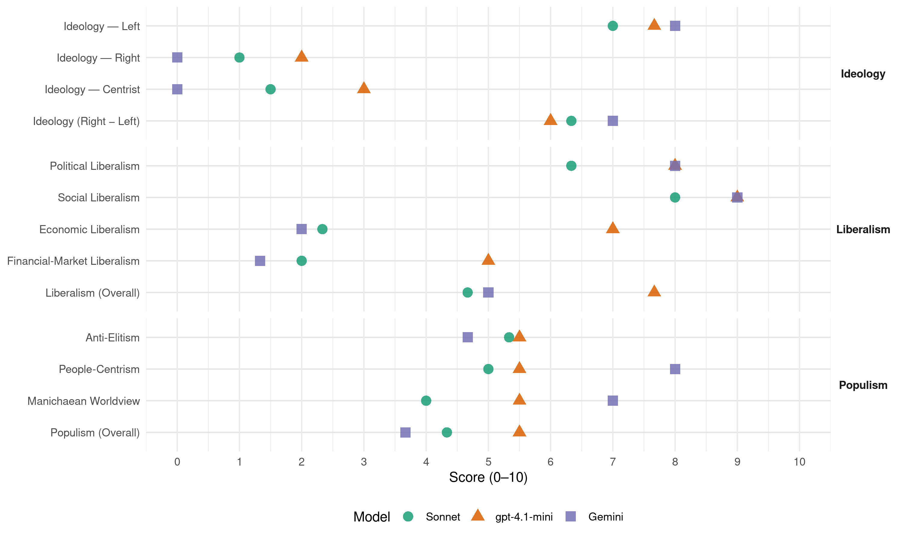

SV (Norway, 1989)
manifesto_id 12221_198909
Get full text: This site shows derived annotations and short verbatim quotes only. The full manifesto text is © Manifesto Project / WZB — obtain it via manifesto-project.wzb.eu using the manifesto_id above.
Headline scores
| Dimension | Sonnet | gpt-4.1-mini | Gemini |
|---|---|---|---|
| Populism (Overall) | 4.3 | 5.5 | 3.7 |
| Anti-Elitism | 5.3 | 5.5 | 4.7 |
| People-Centrism | 5.0 | 5.5 | 8.0 |
| Manichaean Worldview | 4.0 | 5.5 | 7.0 |
| Ideology (Right − Left) | 6.3 | 6.0 | 7.0 |
| Liberalism (Overall) | 4.7 | 7.7 | 5.0 |
| Political Liberalism | 6.3 | 8.0 | 8.0 |
| Social Liberalism | 8.0 | 9.0 | 9.0 |
| Economic Liberalism | 2.3 | 7.0 | 2.0 |
| Financial-Market Liberalism | 2.0 | 5.0 | 1.3 |
Evidence per dimension
Economic Liberalism
Gemini · score 2.0 · verified · chunk 1
“folkevalgt styring av økonomien”
krisa kan ikke løses uten folkevalgt styring av økonomien. Dessuten må
Gemini · score 2.0 · verified · chunk 2
“nasjonalisering av store skogbrukseiendommer”
dyrka matvarer. - Gradvis nasjonalisering av store skogbrukseiendommer til fordel for
Gemini · score 2.0 · verified · chunk 3
“motstander av at utdanning og forskning privatiseres”
Et viktig mål for SVs utdanningspolitikk er lik rett til utdanning. SV er motstander av at utdanning og forskning privatiseres. Ved at private
gpt-4.1-mini · score 7.0 · verified · chunk 1
“Skattesystemet skal jamne ut de store forskjellene i inntekt og levekår, og skaffe det offentlige penger til å bygge ut fellesgodene.”
Skattesystemet skal jamne ut de store forskjellene i inntekt og levekår, og skaffe det offentlige penger til å bygge ut fellesgodene. SV ønsker skattereformer som har en sosial profil og sikrer inntektsgrunnlaget for den offentlige sektoren.
gpt-4.1-mini · score 7.0 · verified · chunk 2
“arbeidsgiveravgiften senkes og fjernes helt i områder med sysselsettingsproblemer”
SV ønsker en bedriftsbeskatning som oppmuntrer til å skape nye arbeidsplasser, som sikrer staten inntekter og som gjør skatteunndragelser vanskeligere enn i dag. - Arbeidsgiveravgiften senkes og fjernes helt i områder med sysselsettingsproblemer.
gpt-4.1-mini · score 7.0 · verified · chunk 3
“SV arbeider for økte ressurser til høyere utdanning og forskning”
SV vil arbeide for økte ressurser til høyere utdanning og forskning. At universitetene skal ha hovedansvaret for grunnforskning og utdanning på hovedfagnivå. Det er et mål å få flere til å ta hovedfag og styrke grunnforskningsmiljøene.
Sonnet · score 2.0 · verified · chunk 1
“folkevalgt styring av økonomien”
Denne krisa kan ikke løses uten folkevalgt styring av økonomien. Dessuten må det velberga flertallet og særlig de rikeste redusere sitt forbruk.
Sonnet · score 2.0 · verified · chunk 2
“SV vil gå imot en ukritisk tilpasning til EFs indre marked”
SV vil gå imot en ukritisk tilpasning til EFs indre marked, og isteden arbeide for en annen type internasjonalt samarbeid
Sonnet · score 3.0 · verified · chunk 3
“Økende privatisering i skoleverket truer lik rett”
Økende privatisering i skoleverket truer lik rett til utdanning. Nedskjæringer og gradvis innføring av egenandeler øker ulikheten
Financial-Market Liberalism
Gemini · score 1.0 · verified · chunk 1
“bank- og kredittvesen skal overtas av samfunnet”
forbruksgoder. Derfor mener SV at bank- og kredittvesen skal overtas av samfunnet. På kort sikt
Gemini · score 1.0 · verified · chunk 2
“statlig forretningsbank”
opprettes en statlig forretningsbank, bl.a. ved at
Gemini · score 2.0 · verified · chunk 3
“reformer i handels- og finanssystemet”
SV støtter utviklingslandenes krav om internasjonale reformer i handels- og finanssystemet. En politikk for global solidaritet må ta utgangspunkt
gpt-4.1-mini · score 4.0 · verified · chunk 1
“Bankene og andre kredittforetak spiller en nøkkelrolle i det økonomiske systemet. Derfor mener SV at bank- og kredittvesen skal overtas av samfunnet.”
Bankene og andre kredittforetak spiller en nøkkelrolle i det økonomiske systemet. Hvilke landsdeler, bedrifter og hvilke typer forbruk som skal få nok og billige lån, er viktig for næringsstrukturen, bosettingsmønsteret og fordelinga av viktige forbruksgoder. Derfor mener SV at bank- og kredittvesen skal overtas av samfunnet.
gpt-4.1-mini · score 6.0 · verified · chunk 2
“Det opprettes en statlig forretningsbank, bl.a. ved at postgiro og postsparebanken slås sammen”
Det opprettes en statlig forretningsbank, bl.a. ved at postgiro og postsparebanken slås sammen. Offentlige bedrifter og virksomhet bør ha sine bankkonti i denne. Banken skal konkurrere med de private forretningsbankene og være et nytt styringsinstrument i den økonomiske politikken.
Sonnet · score 1.0 · verified · chunk 1
“bank- og kredittvesen skal overtas av samfunnet”
Derfor mener SV at bank- og kredittvesen skal overtas av samfunnet. På kort sikt vil vi bruke penge- og kredittloven aktivt
Sonnet · score 2.0 · verified · chunk 2
“Det opprettes en statlig forretningsbank”
Det opprettes en statlig forretningsbank, bl.a. ved at postgiro og postsparebanken slås sammen. Offentlige bedrifter og virksomhet bør ha sine bankkonti i denne.
Sonnet · score 3.0 · verified · chunk 3
“internasjonale reformer i handels- og finanssystemet”
SV støtter utviklingslandenes krav om internasjonale reformer i handels- og finanssystemet
Political Liberalism
Gemini · score 8.0 · verified · chunk 1
“utvikle det politiske demokratiet”
tiltak som kan utvikle det politiske demokratiet og minske avstanden
Gemini · score 8.0 · verified · chunk 2
“undergrave rettsstatsprinsippet”
kriminalpolitikken ikke bidrar til å undergrave rettsstatsprinsippet. Tiltak i perioden
Gemini · score 8.0 · verified · chunk 3
“respekt for menneskerettigheter og individuell”
Prinsippet om rettssikkerhet, respekt for menneskerettigheter og individuell behandling er grunnleggende for SVs politikk overfor
gpt-4.1-mini · score 8.0 · verified · chunk 1
“Valgordninga til Stortinget demokratiseres videre gjennom lavere sperregrense og flere utjamningsmandater.”
SV går inn for følgende tiltak som kan utvikle det politiske demokratiet og minske avstanden mellom velgere og valgte: Valgordninga til Stortinget demokratiseres videre gjennom lavere sperregrense og flere utjamningsmandater.
gpt-4.1-mini · score 8.0 · verified · chunk 2
“rett til barnehageplass. - Rett til tilbud om skole eller fritidshjem”
At barns rettigheter sikres gjennom egen lov om barns oppvekstvilkår. En slik lov må blant annet inneholde: - Rett til barnehageplass. - Rett til tilbud om skole eller fritidshjem som dekker normalarbeidsdagen.
gpt-4.1-mini · score 8.0 · verified · chunk 3
“Prinsippet om rettssikkerhet, respekt for menneskerettigheter og individuell behandling er grunnleggende”
Prinsippet om rettssikkerhet, respekt for menneskerettigheter og individuell behandling er grunnleggende for SVs politikk overfor asylsøkere. Tiltak i perioden 1989-93: - Tortur skal gi grunnlag for politisk asyl. - Alle asylsøkere skal sikres individuell behandling og rettssikkerhet, dette må også gjelde kvinner og barn over myndighetsalder.
Sonnet · score 6.0 · verified · chunk 1
“Valgordninga til Stortinget demokratiseres”
SV går inn for følgende tiltak som kan utvikle det politiske demokratiet og minske avstanden mellom velgere og valgte: Valgordninga til Stortinget demokratiseres videre gjennom lavere sperregrense og flere utjamningsmandater.
Sonnet · score 6.0 · verified · chunk 2
“Forsvar av rettsstaten”
14.5 Forsvar av rettsstaten. SV ser det som særlig viktig at kriminalpolitikken ikke bidrar til å undergrave rettsstatsprinsippet.
Sonnet · score 7.0 · verified · chunk 3
“menneskerettigheter, rettssikkerhet og likeverdig behandling”
SV vil arbeide for en ny utlendingslov grunnlagt på menneskerettigheter, rettssikkerhet og likeverdig behandling av alle nasjonaliteter
Liberalism (Overall)
Gemini · score 5.0 · verified · chunk 1
“utvikle det politiske demokratiet”
tiltak som kan utvikle det politiske demokratiet og minske avstanden
Gemini · score 5.0 · verified · chunk 2
“undergrave rettsstatsprinsippet”
kriminalpolitikken ikke bidrar til å undergrave rettsstatsprinsippet. Tiltak i perioden
Gemini · score 5.0 · verified · chunk 3
“respekt for menneskerettigheter og individuell”
Prinsippet om rettssikkerhet, respekt for menneskerettigheter og individuell behandling er grunnleggende for SVs politikk overfor
gpt-4.1-mini · score 7.0 · verified · chunk 1
“Skattesystemet skal jamne ut de store forskjellene i inntekt og levekår, og skaffe det offentlige penger til å bygge ut fellesgodene.”
Skattesystemet skal jamne ut de store forskjellene i inntekt og levekår, og skaffe det offentlige penger til å bygge ut fellesgodene. SV ønsker skattereformer som har en sosial profil og sikrer inntektsgrunnlaget for den offentlige sektoren.
gpt-4.1-mini · score 8.0 · verified · chunk 2
“rett til barnehageplass. - Rett til tilbud om skole eller fritidshjem”
At barns rettigheter sikres gjennom egen lov om barns oppvekstvilkår. En slik lov må blant annet inneholde: - Rett til barnehageplass. - Rett til tilbud om skole eller fritidshjem som dekker normalarbeidsdagen.
gpt-4.1-mini · score 8.0 · verified · chunk 3
“Prinsippet om rettssikkerhet, respekt for menneskerettigheter og individuell behandling er grunnleggende”
Prinsippet om rettssikkerhet, respekt for menneskerettigheter og individuell behandling er grunnleggende for SVs politikk overfor asylsøkere. Tiltak i perioden 1989-93: - Tortur skal gi grunnlag for politisk asyl. - Alle asylsøkere skal sikres individuell behandling og rettssikkerhet, dette må også gjelde kvinner og barn over myndighetsalder.
Sonnet · score 4.0 · verified · chunk 1
“samfunnsmessig styring av kredittmarkedet”
SV vil ha en samfunnsmessig styring av kredittmarkedet, særlig ved hjelp av statsbankene.
Sonnet · score 5.0 · verified · chunk 2
“bekjempe rasisme og arbeide for større grad”
SV ser det som en prioritert oppgave å bekjempe rasisme og arbeide for større grad av kontakt og samhandling mellom de ulike kulturelle grupper
Sonnet · score 5.0 · verified · chunk 3
“menneskerettigheter, rettssikkerhet og likeverdig behandling”
SV vil arbeide for en ny utlendingslov grunnlagt på menneskerettigheter, rettssikkerhet og likeverdig behandling av alle nasjonaliteter
Anti-Elitism
Gemini · score 7.0 · verified · chunk 1
“kamp mot kapitalmakten”
folkelige kreftene til kamp mot kapitalmakten. SV må også
Gemini · score 4.0 · verified · chunk 2
“politisk presset fra høyresida”
konsekvens av det politiske presset fra høyresida. Det er samfunnsmessig
Gemini · score 3.0 · verified · chunk 3
“spekulasjon fra private hospitseiere”
og isolerte hotellopphold for dem som kommer, og spekulasjon fra private hospitseiere, har ført til sløsing med offentlige midler
gpt-4.1-mini · score 8.0 · verified · chunk 1
“Folkemakt eller kapitalmakt. Fellesskap eller den sterkestes rett.”
…men i å stille opp klare alternativer: Folkemakt eller kapitalmakt. Fellesskap eller den sterkestes rett. Åpenhet eller rasisme. Disse verdivalgene uttrykker hvilke klasseinteresser SV støtter.
gpt-4.1-mini · score 5.0 · mixed · chunk 2
“kapitalkreftenes interesser må vike til fordel for viktige mål”
SV vil gå imot en ukritisk tilpasning til EFs indre marked, og isteden arbeide for en annen type internasjonalt samarbeid, hvor kapitalkreftenes interesser må vike til fordel for viktige mål som natur- og miljøvern, tilfredsstillende arbeidsforhold og ansattes rettigheter.
gpt-4.1-mini · score 3.0 · verified · chunk 3
“Norges velstand er et resultat av en økonomisk verdensorden som undertrykker utviklingsland”
SV ønsker et Norge som ikke er «seg selv nok», men som gjør en innsats overfor undertrykte og forfulgte verden over. Dette forplikter oss til i økende grad å åpne landets grenser. Norges velstand er et resultat av en økonomisk verdensorden som undertrykker utviklingsland. Det finnes mellom 15 og 17 millioner flyktninger i verden i dag.
Sonnet · score 7.0 · verified · chunk 1
“Folkemakt eller kapitalmakt”
Svaret ligger ikke i å søke mot sentrum av norsk politikk, men i å stille opp klare alternativer: Folkemakt eller kapitalmakt. Fellesskap eller den sterkestes rett.
Sonnet · score 5.0 · verified · chunk 2
“kapitalkreftenes interesser må vike”
arbeide for en annen type internasjonalt samarbeid, hvor kapitalkreftenes interesser må vike til fordel for viktige mål som natur- og miljøvern
Sonnet · score 4.0 · verified · chunk 3
“kapitalkreftenes interesser må vike”
SV arbeider for en annen type internasjonalt samarbeid, der kapitalkreftenes interesser må vike for natur- og miljøvern, felles sikkerhet
Ideology — Centrist
Gemini · score 0.0 · verified · chunk 1
“ikke i å søke mot sentrum”
av høyrekreftene ved å komme dem delvis i møte. Svaret ligger ikke i å søke mot sentrum av norsk politikk
gpt-4.1-mini · score 3.0 · verified · chunk 1
“Disse verdivalgene uttrykker hvilke klasseinteresser SV støtter.”
…men i å stille opp klare alternativer: Folkemakt eller kapitalmakt. Fellesskap eller den sterkestes rett. Åpenhet eller rasisme. Disse verdivalgene uttrykker hvilke klasseinteresser SV støtter.
Sonnet · score 1.0 · verified · chunk 1
“søke mot sentrum av norsk politikk”
Svaret ligger ikke i å søke mot sentrum av norsk politikk, men i å stille opp klare alternativer
Sonnet · score 2.0 · verified · chunk 3
“SV ønsker et Norge som ikke er”
SV ønsker et Norge som ikke er «seg selv nok», men som gjør en innsats overfor undertrykte og forfulgte verden over
Ideology — Left
Gemini · score 9.0 · verified · chunk 1
“rettferdig fordeling, bedre miljø”
støtte folkelige krav om en rettferdig fordeling, bedre miljø og mer demokrati.
Gemini · score 8.0 · verified · chunk 2
“kapitalkreftenes interesser må vike”
internasjonalt samarbeid, hvor kapitalkreftenes interesser må vike til fordel for
Gemini · score 7.0 · verified · chunk 3
“kapitalkreftenes interesser må vike”
arbeider for en annen type internasjonalt samarbeid, der kapitalkreftenes interesser må vike for natur- og miljøvern, felles sikkerhet
gpt-4.1-mini · score 9.0 · verified · chunk 1
“SV vil gi et svar på vår tids viktigste spørsmål, på en måte som peker mot et sosialistisk samfunn. Det gjør vi ved å støtte folkelige krav om en rettferdig fordeling, bedre miljø og mer demokrati.”
1.2 Interessekamp og verdivalg. SV vil gi et svar på vår tids viktigste spørsmål, på en måte som peker mot et sosialistisk samfunn. Det gjør vi ved å støtte folkelige krav om en rettferdig fordeling, bedre miljø og mer demokrati.
gpt-4.1-mini · score 7.0 · verified · chunk 2
“skattesnyteriet undergraver SVs mål om et solidarisk samfunn”
Kamp mot skatte- og avgiftssnyteriet. Skattesnyteriet undergraver SVs mål om et solidarisk samfunn bygd på høyt fellesforbruk. Beregninger tyder på at snyteriet øker.
gpt-4.1-mini · score 7.0 · verified · chunk 3
“Norges velstand er et resultat av en økonomisk verdensorden som undertrykker utviklingsland”
SV ønsker et Norge som ikke er «seg selv nok», men som gjør en innsats overfor undertrykte og forfulgte verden over. Dette forplikter oss til i økende grad å åpne landets grenser. Norges velstand er et resultat av en økonomisk verdensorden som undertrykker utviklingsland. Det finnes mellom 15 og 17 millioner flyktninger i verden i dag.
Sonnet · score 8.0 · verified · chunk 1
“omfordele penger og makt”
For dem som tør å omfordele penger og makt, er det mulig å skape avgjørende forbedringer i folks levekår.
Sonnet · score 7.0 · verified · chunk 2
“Det er samfunnsmessig riktig at staten støtter risikoprosjekter”
Det er samfunnsmessig riktig at staten støtter risikoprosjekter. Det kan også være riktig at staten går direkte inn som eiere av nye selskaper
Sonnet · score 6.0 · verified · chunk 3
“privatiseres. Ved at private kapitalinteresser”
SV er motstander av at utdanning og forskning privatiseres. Ved at private kapitalinteresser brukes til å finansiere utdanning og forskning
Ideology (Right − Left)
Gemini · score 8.0 · verified · chunk 1
“kamp mot kapitalmakten”
folkelige kreftene til kamp mot kapitalmakten. SV må også
Gemini · score 7.0 · verified · chunk 2
“kapitalkreftenes interesser må vike”
internasjonalt samarbeid, hvor kapitalkreftenes interesser må vike til fordel for
Gemini · score 6.0 · verified · chunk 3
“kapitalkreftenes interesser må vike”
arbeider for en annen type internasjonalt samarbeid, der kapitalkreftenes interesser må vike for natur- og miljøvern, felles sikkerhet
gpt-4.1-mini · score 7.0 · verified · chunk 1
“SV vil gi et svar på vår tids viktigste spørsmål, på en måte som peker mot et sosialistisk samfunn. Det gjør vi ved å støtte folkelige krav om en rettferdig fordeling, bedre miljø og mer demokrati.”
1.2 Interessekamp og verdivalg. SV vil gi et svar på vår tids viktigste spørsmål, på en måte som peker mot et sosialistisk samfunn. Det gjør vi ved å støtte folkelige krav om en rettferdig fordeling, bedre miljø og mer demokrati.
gpt-4.1-mini · score 6.0 · verified · chunk 2
“kapitalkreftenes interesser må vike til fordel for viktige mål”
SV vil gå imot en ukritisk tilpasning til EFs indre marked, og isteden arbeide for en annen type internasjonalt samarbeid, hvor kapitalkreftenes interesser må vike til fordel for viktige mål som natur- og miljøvern, tilfredsstillende arbeidsforhold og ansattes rettigheter.
gpt-4.1-mini · score 5.0 · verified · chunk 3
“Norges velstand er et resultat av en økonomisk verdensorden som undertrykker utviklingsland”
SV ønsker et Norge som ikke er «seg selv nok», men som gjør en innsats overfor undertrykte og forfulgte verden over. Dette forplikter oss til i økende grad å åpne landets grenser. Norges velstand er et resultat av en økonomisk verdensorden som undertrykker utviklingsland. Det finnes mellom 15 og 17 millioner flyktninger i verden i dag.
Sonnet · score 8.0 · verified · chunk 1
“klasseinteresser SV støtter”
Åpenhet eller rasisme. Disse verdivalgene uttrykker hvilke klasseinteresser SV støtter. Arbeiderbevegelsen må være moderne
Sonnet · score 6.0 · verified · chunk 2
“kapitalkreftenes interesser må vike”
arbeide for en annen type internasjonalt samarbeid, hvor kapitalkreftenes interesser må vike til fordel for viktige mål som natur- og miljøvern
Sonnet · score 5.0 · verified · chunk 3
“private kapitalinteresser brukes til å finansiere”
Ved at private kapitalinteresser brukes til å finansiere utdanning og forskning, vil profitthensyn kunne komme til å styre utviklingen
Ideology — Right
Gemini · score 0.0 · verified · chunk 1
“Åpenhet eller rasisme”
Fellesskap eller den sterkestes rett. Åpenhet eller rasisme. Disse verdivalgene
Gemini · score 0.0 · verified · chunk 3
“Innvandringsstoppen må oppheves”
En slik politikk kan ikke SV godta. - Innvandringsstoppen må oppheves. SVs alternativ er at utlendinger kan innvandre
gpt-4.1-mini · score 2.0 · verified · chunk 1
“Dagens innvandringsstopp fungerer rasistisk og urettferdig. SV vil oppheve denne.”
SV vil føre en mer åpen politikk overfor flyktninger og asylsøkere. Dagens innvandringsstopp fungerer rasistisk og urettferdig. SV vil oppheve denne.
gpt-4.1-mini · score 3.0 · verified · chunk 2
“Norske etableringer i utlandet eller utenlandske etableringer i Norge som er av en viss størrelse eller av strategisk betydning, vurderes nøye før de godtas”
Norske etableringer i utlandet eller utenlandske etableringer i Norge som er av en viss størrelse eller av strategisk betydning, vurderes nøye før de godtas. SV vil godta nyetableringer i utlandet for å få kontakt med markedene. Dette må ikke gå på bekostning av norske arbeidsplasser.
gpt-4.1-mini · score 1.0 · verified · chunk 3
“Innvandringsstoppen fungerer rasistisk. En slik politikk kan ikke SV godta”
Innvandringsstoppen betyr at Norge fører en politikk overfor innvandrere som diskriminerer folk fra utviklingsland. Nesten bare folk som kommer fra vestlige land har fått komme til Norge etter at innvandringsstoppen ble innført. Det betyr at innvandringsstoppen fungerer rasistisk. En slik politikk kan ikke SV godta.
Sonnet · score 1.0 · verified · chunk 1
“Åpenhet eller rasisme”
Folkemakt eller kapitalmakt. Fellesskap eller den sterkestes rett. Åpenhet eller rasisme. Disse verdivalgene uttrykker hvilke klasseinteresser SV støtter.
Sonnet · score 1.0 · verified · chunk 2
“Innvandringsstoppen betyr at Norge fører en politikk”
Innvandringsstoppen betyr at Norge fører en politikk overfor innvandrere som diskriminerer folk fra utviklingsland
Sonnet · score 1.0 · verified · chunk 3
“innvandringsstoppen fungerer rasistisk”
Det betyr at innvandringsstoppen fungerer rasistisk. En slik politikk kan ikke SV godta
Manichaean Worldview
Gemini · score 7.0 · verified · chunk 1
“Folkemakt eller kapitalmakt”
stille opp klare alternativer: Folkemakt eller kapitalmakt. Fellesskap eller den
gpt-4.1-mini · score 8.0 · verified · chunk 1
“Folkemakt eller kapitalmakt. Fellesskap eller den sterkestes rett. Åpenhet eller rasisme.”
…men i å stille opp klare alternativer: Folkemakt eller kapitalmakt. Fellesskap eller den sterkestes rett. Åpenhet eller rasisme. Disse verdivalgene uttrykker hvilke klasseinteresser SV støtter.
gpt-4.1-mini · score 3.0 · verified · chunk 3
“Norges velstand er et resultat av en økonomisk verdensorden som undertrykker utviklingsland”
SV ønsker et Norge som ikke er «seg selv nok», men som gjør en innsats overfor undertrykte og forfulgte verden over. Dette forplikter oss til i økende grad å åpne landets grenser. Norges velstand er et resultat av en økonomisk verdensorden som undertrykker utviklingsland. Det finnes mellom 15 og 17 millioner flyktninger i verden i dag.
Sonnet · score 6.0 · verified · chunk 1
“kamp mot kapitalmakten”
for å arbeide for samordning av de folkelige kreftene til kamp mot kapitalmakten. SV må også delta i arbeidet for å reise nye bevegelser
Sonnet · score 3.0 · verified · chunk 2
“det politiske presset fra høyresida”
Problemet blir forverret ved at det nå er blitt politisk vanskeligere for staten å satse på risikoprosjekter. Dette er en konsekvens av det politiske presset fra høyresida.
Sonnet · score 3.0 · verified · chunk 3
“undertrykte og forfulgte verden over”
SV ønsker et Norge som ikke er «seg selv nok», men som gjør en innsats overfor undertrykte og forfulgte verden over
People-Centrism
Gemini · score 8.0 · verified · chunk 1
“støtte folkelige krav”
sosialistisk samfunn. Det gjør vi ved å støtte folkelige krav om en rettferdig
gpt-4.1-mini · score 7.0 · verified · chunk 1
“Folkemakt eller kapitalmakt. Fellesskap eller den sterkestes rett.”
…men i å stille opp klare alternativer: Folkemakt eller kapitalmakt. Fellesskap eller den sterkestes rett. Åpenhet eller rasisme. Disse verdivalgene uttrykker hvilke klasseinteresser SV støtter.
gpt-4.1-mini · score 4.0 · verified · chunk 3
“SV ønsker at Norge skal bli et land der ulike kulturer og livssyn skaper mangfold og toleranse”
16. Norge - et åpnere samfunn. 16.1 Norges ansvar. SV ønsker at Norge skal bli et land der ulike kulturer og livssyn skaper mangfold og toleranse. SV ønsker et Norge som ikke er «seg selv nok», men som gjør en innsats overfor undertrykte og forfulgte verden over.
Sonnet · score 7.0 · verified · chunk 1
“brei folkelig mobilisering”
Kampen for sosialisme må bygge på en brei folkelig mobilisering. En sterk arbeiderbevegelse kan slå tilbake høyrekreftene
Sonnet · score 4.0 · verified · chunk 2
“et solidarisk samfunn bygd på høyt fellesforbruk”
Skattesnyteriet undergraver SVs mål om et solidarisk samfunn bygd på høyt fellesforbruk
Sonnet · score 4.0 · verified · chunk 3
“folks egenaktivitet og profesjonell kulturvirksomhet”
SVs svar på denne utfordringen er et levende kulturliv der det gis rom for både folks egenaktivitet og profesjonell kulturvirksomhet
Populism (Overall)
Gemini · score 7.0 · verified · chunk 1
“Folkemakt eller kapitalmakt”
stille opp klare alternativer: Folkemakt eller kapitalmakt. Fellesskap eller den
Gemini · score 2.0 · verified · chunk 2
“politisk presset fra høyresida”
konsekvens av det politiske presset fra høyresida. Det er samfunnsmessig
Gemini · score 2.0 · verified · chunk 3
“spekulasjon fra private hospitseiere”
og isolerte hotellopphold for dem som kommer, og spekulasjon fra private hospitseiere, har ført til sløsing med offentlige midler
gpt-4.1-mini · score 8.0 · verified · chunk 1
“Folkemakt eller kapitalmakt. Fellesskap eller den sterkestes rett. Åpenhet eller rasisme.”
…men i å stille opp klare alternativer: Folkemakt eller kapitalmakt. Fellesskap eller den sterkestes rett. Åpenhet eller rasisme. Disse verdivalgene uttrykker hvilke klasseinteresser SV støtter.
gpt-4.1-mini · score 5.0 · mixed · chunk 2
“kapitalkreftenes interesser må vike til fordel for viktige mål”
SV vil gå imot en ukritisk tilpasning til EFs indre marked, og isteden arbeide for en annen type internasjonalt samarbeid, hvor kapitalkreftenes interesser må vike til fordel for viktige mål som natur- og miljøvern, tilfredsstillende arbeidsforhold og ansattes rettigheter.
gpt-4.1-mini · score 3.0 · verified · chunk 3
“Norges velstand er et resultat av en økonomisk verdensorden som undertrykker utviklingsland”
SV ønsker et Norge som ikke er «seg selv nok», men som gjør en innsats overfor undertrykte og forfulgte verden over. Dette forplikter oss til i økende grad å åpne landets grenser. Norges velstand er et resultat av en økonomisk verdensorden som undertrykker utviklingsland. Det finnes mellom 15 og 17 millioner flyktninger i verden i dag.
Sonnet · score 6.0 · verified · chunk 1
“Folkemakt eller kapitalmakt”
Svaret ligger ikke i å søke mot sentrum av norsk politikk, men i å stille opp klare alternativer: Folkemakt eller kapitalmakt.
Sonnet · score 4.0 · verified · chunk 2
“kapitalkreftenes interesser må vike”
arbeide for en annen type internasjonalt samarbeid, hvor kapitalkreftenes interesser må vike til fordel for viktige mål som natur- og miljøvern
Sonnet · score 3.0 · verified · chunk 3
“kapitalkreftenes interesser må vike”
SV arbeider for en annen type internasjonalt samarbeid, der kapitalkreftenes interesser må vike for natur- og miljøvern, felles sikkerhet
Social Liberalism